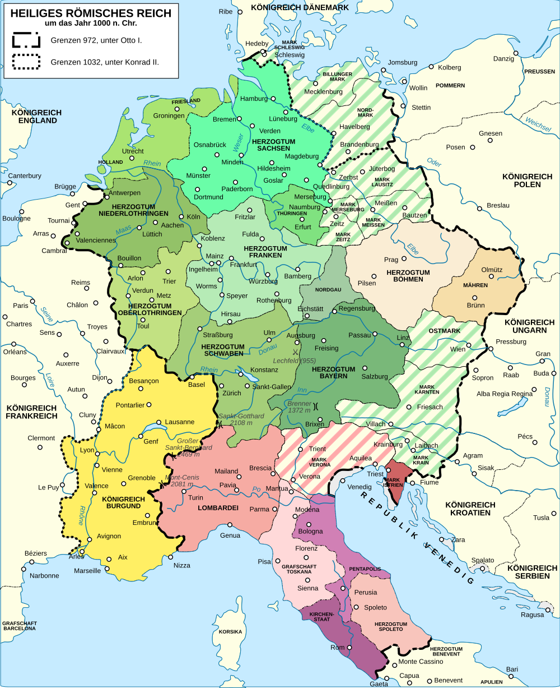
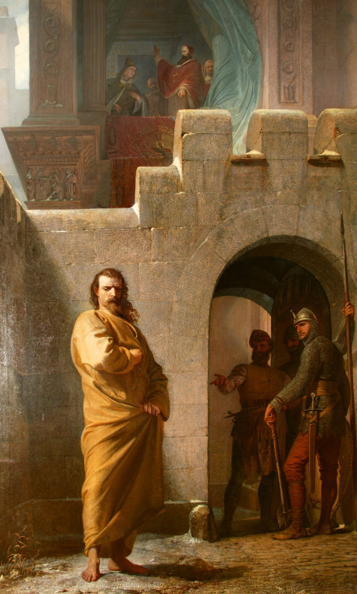

奧托-薩利安帝國教會體制：早期德意志國家的治理機制、空間動態與結構性崩潰

課堂大意：本專題探討中世紀早期德意志地區獨特的「奧托-薩利安帝國教會體制」（Reichskirchensystem）。在缺乏現代官僚體系與世俗行政隊伍的歷史語境下，德意志君主如何巧妙結合王室保護與教會資源，構建起制衡部落公爵割據、維持巡迴朝廷動態治理的政治基石；並解構這一政教合一體制如何因世俗授職與聖職買賣的內在矛盾，引發與羅馬教廷席捲歐洲的「主教敘任權之爭」，最終在《沃爾姆斯宗教協定》的雙軌妥協中走向結構性崩潰，無可逆轉地型塑了德意志長期邦國分裂的憲政命運。
帝國教會體制的歷史起源與學術重構
為了深刻理解早期德意志王權的權力演進與運作邏輯，必須系統性地追溯到加洛林王朝乃至更早的墨洛溫王朝政治遺產。在這一漫長歷史進程中，君主將帝國境內的主教區、修道院和堂區教會置於王室保護（Königsschutz）之下，並藉此對教會內部事務施加廣泛的政治影響力，這已成為一種公認的王室特權。王室保護不僅為教會機構提供了免受地方世俗強權侵害的法律屏障，更賦予了國王一種類似「私有教會主」（Eigenkirchenherr）的超然支配地位。
與此同時，免役特權（Immunität）的授予進一步加深了這種政教結合。免役權的法理淵源可追溯至墨洛溫時代（如614年《巴黎敕令》及《馬庫爾夫公文範本》），並在加洛林王朝查理曼大帝與虔誠者路易（814–840年在位）時期被全面制度化確立與普及。雖然免役權在法理上嚴格禁止地方世俗伯爵（comites）擅自進入特許教產領地徵稅、開庭或行使行政管轄，賦予了教會機構相對於地方割據勢力的豁免權，但其在政治實踐中卻將這些教會直接納入王權的保護與監管網絡，使其成為提供國家公共物資與防務資源的法定渠道。在缺乏系統化世俗官僚體系與高讀寫能力世俗階層的中世紀早期，沒有高級神職人員在日常文書、司法和財政事務上的深度參與，帝國的統治將難以維持。在當時的王室文書與敘事文獻中，這些受王室保護的教會機構被視為一個整體，常被冠以「帝國所有教會」（omnes ecclesiae Romani imperii）或「羅馬帝國境內廣泛分佈之大公教會」（omnis ecclesia catholica per Romani fines imperii circumquaque diffusa）之稱，表明其在法理上已被視為王權直接支配的公共制度網絡。
然而，現代中世紀學術研究對於將這一網絡視為一個高度組織化、自上而下深思熟慮的「中央集權系統」提出了實質性的質疑與重構。奧地利史學家萊奧·桑蒂法勒（Leo Santifaller）曾在20世紀中葉系統構建了經典的「奧托-薩利安帝國教會體制」（ottonisch-salisches Reichskirchensystem）理論，強調奧托一世有意識地創設了一套以主教為封建行政支柱的整體國家制度。但自1980年代以來，著名中世紀史學家提摩西·羅伊特（Timothy Reuter，德文原音譯為羅伊特）在1982年的里程碑式論文《奧托與薩利安統治者的「帝國教會體制」：一項重新審視》（The 'Imperial Church System' of the Ottonian and Salian Rulers: A Reconsideration）中提出強力修正。羅伊特指出，傳統歷史敘事過度高估了奧托與薩利安君主及其顧問的前瞻性戰略藍圖；德意志王權對教會的運用並非德意志所獨有（英格蘭、法蘭西亦存在類似支配），且帝國並非一個自上而下、機械運行的官僚官制機器，而是一個由多個分散的「文化與政治區域」（Kulturgebiete）所組成的動態網絡。這一網絡的實質維繫，高度依賴於神職人員在空間與職務上的頻繁流動，通過高級教士（prelates）的升遷、調動、訪問與日常禮儀互動，編織出橫跨帝國境內的人際關係、封建義務與共同價值鏈條。因此，儘管「奧托-薩利安帝國教會體制」這一概念在描述王權與教會的緊密結合時仍具備核心學術價值，但必須將其理解為一種充滿妥協、利益博弈且高度依賴地方關係的動態治理實踐，而非現代意義上的科層制國家機器。
關鍵歷史人物與王權的神聖化重塑

帝國教會體制的奠基與發展，與奧托王朝及薩利安王朝幾位核心君主的政治實踐密不可分。奧托一世（936–973年在位）在936年繼承了薩克森公國與德意志王位，並在查理曼大帝的舊都亞琛舉行了極具憲政象徵意義的加冕典禮。根據薩克森當時代編年史家維杜金德（Widukind of Corvey）在《薩克森事蹟》（Res gestae saxonicae）中的生動記載，德意志諸公爵在典禮上向奧托宣誓效忠並充任內廷職事。在解決了美因茨、科隆與特里爾三大教省大主教關於首席祝聖優先權的激烈爭議後，由美因茨大主教希爾德貝特（Hildebert of Mainz）行使首席祝聖與塗油特權，科隆大主教維格弗里德（Wigfrid）與特里爾大主教等在旁輔佐。在儀式中，大主教依序授予奧托象徵驅逐基督之敵與守護教會的聖劍（gladius）、象徵忠誠熱誠與神聖庇佑的手鐲與披肩（armillas ac pallium）、象徵牧者之杖與糾察威權的權杖與牧杖（baculum cum sceptro），最後由希爾德貝特聯同其他大主教為奧托加戴王冠（diadema），從而以嚴密的聖事儀禮確立了其統治的神聖合法性。
然而，奧托一世的早期統治充滿了慘烈的內戰與叛亂，其反對者不僅包括傳統的世俗公爵，甚至還包括其同父異母的兄長坦克瑪（Thankmar）、胞弟亨利（Henry）以及其長子柳多爾夫（Liudolf）。在這些生死攸關的權力拷問中，奧托一世展現了非凡的政治韌性與軍事運氣。938年坦克瑪在埃伯施堡（Eresburg）教堂祭壇前被殺；而其弟亨利在939年聯合法蘭克尼亞公爵埃伯哈德、洛林公爵吉塞爾貝特以及西法蘭克國王路易四世發動大規模叛亂。在939年春季的比爾滕之役（Battle of Birten）中，奧托親率劣勢部隊堅守，在萊茵河畔奇蹟般挫敗叛軍。同年稍晚至關重要的安德納赫戰役（Battle of Andernach）爆發時，奧托本人遠在萊茵河東岸，而效忠王室的康拉丁家族伯爵庫爾茨博爾德（Conrad Kurzbold）與韋特勞伯爵烏多（Udo of Wetterau）趁反叛公爵大軍搶渡萊茵河時發動致命突襲：法蘭克尼亞公爵埃伯哈德當場陣亡，洛林公爵吉塞爾貝特在敗退溺死於萊茵河急流中，反對力量瞬間瓦解。在當時深厚的宗教信仰語境下，這種連番以寡擊眾、主力將領暴斃的逆轉被整個王國廣泛解讀為上帝神意的直接彰顯，證明奧托是蒙神揀選的合法君主。這一神聖光環不僅徹底鞏固了奧托的王位，也為其父亨利一世所確立的「王國不予分割」憲政原則提供了神聖合法性支撐。此後，儘管胞弟亨利在941年再次密謀於奎德林堡（Quedlinburg）修道院的復活節慶典上刺殺奧托，陰謀敗露後亨利依然獲得了寬恕，並於947年被授予巴伐利亞公國。奧托一世更在955年的萊赫菲爾德（Lechfeld）戰役中徹底擊潰入侵的馬扎爾人，終結了長達半個世紀的匈牙利劫掠危機，將其聲望推向頂峰，並為其在962年進軍羅馬加冕為神聖羅馬皇帝奠定了基石。
在奧托一世的統治中後期，其幼弟科隆大主教兼洛林公爵布魯諾（Brun I of Cologne, 953–965年掌教）成為帝國教會實踐中最關鍵的人物。布魯諾兼具帝國大主教與世俗大公的雙重身分，將宗教改革、古典學術復興與國家行政深度融合，並利用宮廷教堂培育了整整一代高素質的高級教士。
然而，這一由君主主導教會的體制在薩利安王朝的亨利三世（1039–1056年在位）時期達到了歷史頂點，同時也埋下了日後大崩潰的種子。亨利三世是一位極度虔誠、深受教會克呂尼改革思想薰陶的君主，他視自己為「基督的代理人」（vicarius Christi），對帝國教會負有神聖的最高引導權（regimen ecclesiasticum）。最為顯著的歷史轉折點發生在1046年：面對羅馬教廷內部三個對立教宗（本篤九世、西爾維斯特三世、額我略六世）互相爭伐、買賣聖職的混亂局面，亨利三世南下義大利召開蘇特里宗教會議（Synod of Sutri）與羅馬會議，以帝國權威一口氣廢黜了三位教宗，並親自扶立德意志班貝格主教為教宗克萊門特二世。亨利三世隨後接受了羅馬公民授予的「羅馬貴族長」（Patricius Romanorum）頭銜，將羅馬教宗的選舉與任命權直接收歸帝國皇權掌控。為了在德意志本土打造絕對忠誠的行政班底，亨利三世在戈斯拉爾皇宮興建了宏偉的聖西門與猶大王家修道學院（Pfalzstift St. Simon und Judas），將其建設為效忠皇帝本人的精英教士培訓與選拔基地。然而，正是亨利三世大力扶持的德意志籍改革派教宗集團，在教廷內部孕育出了一股強大的「教宗至上與教會自由」（Libertas Ecclesiae）思想，最終在隨後的亨利四世時期演變為反噬帝國皇權的毀滅性風暴。
帝國體制的三大核心運作機制
部落公爵的地緣制衡
德意志王國早期統治的最大結構性威脅，在於傳統部落公爵領（Stammesherzogtümer）強大的割據力量。巴伐利亞、施瓦本、法蘭克尼亞、薩克森與洛林等公爵領的統治者，在歷史上擁有深厚的地域認同、世襲繼承訴求以及獨立的軍事動員網絡。為了防止王權被虛位化，奧托一世採取了果斷的政治重組。在939年安德納赫戰役擊潰叛亂公爵後，他不再任命新的法蘭克尼亞世俗公爵，而是直接由王室接管該公國的核心權益，將其土地與司法權大量轉化為直接隸屬於王室的伯爵領與教會采邑，從而在地緣上肢解了這一核心威脅。對於其他公國，奧托初期多採取「家族聯姻網絡」策略進行羈縻，將巴伐利亞封給胞弟亨利、施瓦本封給長子柳多爾夫、洛林委任給幼弟布魯諾大主教。
然而，這種基於世俗血緣關係的統治架構很快暴露了其脆弱性。世俗貴族家庭必然面臨領地繼承糾紛與地方封臣利益的牽制，即便是王室骨肉亦會發起流血叛亂——953年長子柳多爾夫因憂慮王位繼承權受威脅，便聯合施瓦本貴族掀起了席捲帝國的兩年內戰。這表明世俗封建效忠在本質上充滿背叛風險。與世俗貴族形成鮮明對比的是，教會的高級神職人員依據教規恪守獨身制，在法理上無法產生合法的世襲繼承人。當一位主教或帝國修道院長逝世後，其管轄的教區財產、城堡與司法特權必然回歸君主掌控，由君主重新選拔任命。因此，將關鍵的世俗行政權威、交通樞紐防務與經濟收益大規模託付給主教和帝國修道院長，成為德意志君主瓦解部落公爵世襲割據、維持地緣政治平衡的最有效制度防線。
教會封建化與宮廷教堂的人才鏈條
奧托-薩利安體制的制度實踐，本質上是將神聖的宗教職能與封建法權進行高度結合。當一個帝國主教區或皇家修道院（monasterium regale / regia abbatia）出現空缺時，君主會依據其王室保護權與事實上的授任權提名繼任人選。隨後，君主透過公開的世俗授職儀式向其授予教區管轄權、象徵王權恩賜的帝國教產（Reichsgut）以及一系列珍貴的「王室特權」（Regalia），包括在指定轄區內的最高裁判管轄權、鑄幣特權（Münzregal）、關稅徵收權（Zollregal）以及市場設立權（Marktregal）。作為對等交換，獲任的主教與修道院長必須向君主宣誓行臣服禮（homage）與效忠誓詞（fealty），承擔封建臣屬義務，並向帝國提供穩定的軍事軍役（Heeresdienst）以及龐大的財政物資貢賦。在實戰動員中，帝國主教區所派遣裝備精良的重裝騎兵與附隨戰士，構成了德意志王權最精銳、動員效率最高的常備主力。
為了保證這一高層神職群體在政治上對王室的絕對效忠與在行政事務上的專業素養，宮廷教堂（Capella regia / Hofkapelle）發揮了無可替代的「高階教士與王室秘書官培育樞紐」作用。正如歷史學家約瑟夫·弗萊肯斯坦（Josef Fleckenstein）在其權威著作中所論證的，宮廷教堂不僅是隨侍皇帝舉行日常彌撒與聖禮的宗教組織，更是早期德意志帝國唯一的中央文書與機要行政機關。在宮廷中服務的年輕隨侍教士（Kapläne），多數選拔自帝國各大顯赫世俗貴族家族。他們在宮廷教堂內跟隨朝廷巡迴流動，親自參與草擬王家特許狀（Diplome）、處理外交通訊、草擬敕令法案，接受最嚴格的公文寫作、教會法理與實際治國術的磨練。當地方重要教區主教出缺時，君主通常會越過地方大教堂參事會的自主選舉，直接從宮廷教堂中遴選這些忠誠度經受過長年考驗、深諳帝國政治全局的宮廷教士派往地方主教座堂。這一緊密的人才晉升通道，在君主核心與地方主教座堂之間建構了一張高度穩定、跨越地域狹隘利益的忠誠神職網絡。
巡迴朝廷與空間動態治理

在空間政治構造上，中世紀盛期的德意志王國呈現出極其顯著的「多中心」與「去中心化」特質，並不存在像羅馬或君士坦丁堡那樣擁有固定官僚機構的常設首都。君主維繫廣袤疆土統治的核心機制，正是「巡迴朝廷」（Reisekönigtum）這一動態統治形態。在早期中世紀這種基於「人際面對面接觸」（personaler Personenverbandsstaat）的政治生態中，王權的合法性與威懾力必須依賴君主的親臨顯現。君主與其宮廷隨從必須常年不停地在各個行省間巡歷，親自召開帝國議會（Hoftag）、主持司法會審、平息封建糾紛、接受誓忠，以此向地方封建領主與信眾直觀彰顯神聖王權。
這種常年巡迴的動態治理面臨著極其嚴峻的後勤補給考驗。在中世紀早期道路狀況惡劣、缺乏大規模水陸長途糧秣運輸體系的經濟條件下，將各地的農業產出集中運往單一固定城市在後勤上是不可能的。因此，王室採取了「主動走向物資」的逆向經濟邏輯——朝廷直接攜帶數百乃至上千名隨從與軍隊，移駕至物資充盈的地點進行就地消費與消耗。為此，王室沿著帝國境內的主要河流（萊茵河、美因河、易北河、多瑙河）與羅馬古道網絡，建立起一系列間隔大約一日路程（15至25公里）的「皇室行宮」（Pfalzen）作為巡迴中繼站。
然而，單純依賴世俗王室領地（Fiscalia）內的行宮，遠不足以支應朝廷全年的繁重消耗。此時，帝國教會體制提供了不可或缺的後勤網絡支撐。相比於充滿防範戒心與割據意識的世俗公爵莊園，防禦堅固、糧倉充實的主教座堂城鎮與帝國修道院，是皇帝更為安全、可靠且舒適的停駐據點。根據約翰·伯恩哈特（John W. Bernhardt）在《巡迴王權與皇家修道院》（Itinerant Kingship and Royal Monasteries）中的深入研究，這些教會機構必須承擔法定的「王室役務」（Servitium regis），包括提供糧食、草料、肉類、葡萄酒等實物供給的「草料與補給役」（Fodrum），以及負擔朝廷隨員食宿款待的「接待義務」（Gistum）。在持續不斷的巡迴流動中，宮廷的隨侍人員會根據所途經的行省區域動態調整，地方主教與修道院長在朝廷臨近時加入議事，離開時提供護送。可以說，正是帝國教會網絡在全境鋪設的密集物資補給點與行政支點，使得缺乏固定首都的德意志巡迴王權得以有效運轉。
內部矛盾：政教合一的內耗與改革運動的興起

儘管奧托-薩利安體制在維繫政治穩定、抵禦外敵與壓制世俗割據方面成效卓著，但其深層架構卻建立在「世俗封建支配」與「教會屬靈純潔」之間無法調和的內在悖論之上。當主教與修道院長被深度嵌合進國家的軍事與封建體系後，世俗功利不可避免地嚴重腐蝕了修道院與主教座堂的神聖追求。世俗君主對高級聖職的隨意處分與授任，在民間與嚴格教規派眼裡往往無異於赤裸裸的「買賣聖職」（Simony，西蒙尼症）——地方貴族與朝廷教士往往透過獻納巨額貢金、轉讓土地或許諾軍役服務，以換取擁有龐大封地與特權的主教寶座。與此同時，大量地方下級神職人員公然違反獨身誓約、娶妻蓄妾（Nicolaitism，尼哥拉派症），並試圖將堂區與教產傳承給私生子女，使得聖職面臨全面的世襲化與世俗化墮落。
這場精神危機自10世紀起促成了以勃艮第的克呂尼修道院（Cluny）以及洛林的戈爾茲修道院（Gorze）為發源地的全歐教會改革運動。改革派主張嚴格恪守本篤會會規、肅清聖職買賣與神職婚姻，並發出激昂的呼聲：教會必須從世俗君主的私有支配下解放出來，實現真正的「教會自由」（Libertas Ecclesiae）。到了11世紀中葉，在德意志皇帝亨利三世支持下入主羅馬教廷的一批洛林與德意志改革派神職人員（如亨伯特樞機、希爾德布蘭德等），將這場原屬於修道院內部的道德精神運動，全面上升為挑戰世俗君主對教會最高控制權的法理革命。
這場憲政危機在薩利安王朝皇帝亨利四世（1056–1106年在位）與教宗格列高利七世（1073–1085年在位）之間迎來了全面爆發，史稱「主教敘任權之爭」（Investiture Controversy）。1075年，格列高利七世草擬了具有震撼性質的《教宗訓令》（Dictatus Papae），宣示羅馬教宗擁有不受任何世俗權威審判的至高裁判權，教宗不僅有權罷黜主教，甚至在法理上擁有廢黜皇帝的最高特權，並宣布徹底禁止任何世俗君主對神職人員行使世俗授職。
亨利四世對此作出了極其強硬的回擊。1076年1月，亨利四世在沃爾姆斯召集德意志主教宗教會議，發表了痛斥格列高利七世為偽僧侶、宣稱其教宗職位無效並勒令其退位的聯名詔書。格列高利七世隨即發動前所未有的雷霆反制：於1076年2月的羅馬大齋期會議上，教宗正式宣布對亨利四世施以嚴厲的「絕罰處分」（Excommunication），將其逐出教會，並宣誓解除全體臣民對亨利四世的效忠誓約。
教宗祭出的絕罰制裁與誓約解除令，在德意志內部引發了災難性的憲政骨牌效應。長久以來對薩利安王朝強化中央王權極度不滿的薩克森貴族與南部部落公爵，立刻以教宗絕罰為合法藉口結成反皇同盟，並在特雷布爾（Trebur）集會上向亨利四世發出最後通牒：若不能在被絕罰滿一年之內（即1077年2月前）重獲教宗赦免，德意志諸侯將徹底廢黜其王位並另立新君。面對王權土崩瓦解的致命危機，亨利四世被迫在1077年1月的寒冬中冒險翻越阿爾卑斯山，前往義大利北部的卡諾莎城堡（Canossa），身披粗麻悔罪苦衣，在城堡外的冰天雪地中赤足哀求了整整三天。面對君主以悔罪基督徒身分所展現的謙卑，教宗格列高利七世受制於牧者赦罪的神聖職責，不得不開門解除對亨利四世的絕罰。
儘管這場著名的「卡諾莎之行」（Walk to Canossa）在短期戰術上成功打破了諸侯反對派的合法性聯盟，為亨利四世爭取了回國平叛的時間並使其擊敗對立國王（anti-king）施瓦本的魯道夫，但它在政治思想與象徵秩序上卻產生了毀滅性的後果。早期德意志君主所自傲的「受膏神聖受選者」神話徹底破滅，皇帝在天下信眾面前公開承認了教宗對自身罪愆與王位的精神仲裁權。神聖王權的超然神聖性從此瓦解，德意志王權在憲政上的無上威信遭受了無法彌合的重創。
帝國教會體制的崩潰：沃爾姆斯協定與權力重組
妥協之路的曲折探索
在格列高利七世與亨利四世這兩位核心主角相繼離世後，敘任權之爭並未平息，而是在整個西歐政治版圖中持續發酵。為了解決這場兩敗俱傷的政教僵局，教廷法學家與世俗法學家（如沙特爾的伊沃主教，Ivo of Chartres）開始嘗試將主教職位進行二元化的法理切分：主教既是神聖教會的屬靈牧者，又是領有世俗土地與司法特權的封建封臣。1107年，英格蘭國王亨利一世與坎特伯雷大主教安塞爾姆達成了《倫敦宗教協定》（Concordat of London），英王同意放棄使用牧杖與戒指進行象徵宗教聖事的授職，但保留了要求新當選教士在領受世俗教產前向國王行臣服禮宣誓效忠的特權。這一區分屬靈聖職與世俗封邑的妥協智慧，為德意志帝國境內的爭端解決提供了寶貴的範式。
然而，德意志帝國境內的政教利益牽扯遠比英格蘭更加錯綜複雜。1111年，皇帝亨利五世率大軍進軍羅馬，與教宗帕斯卡爾二世在蘇特里（Sutri）達成了名震一時的「蘇特里條約」（Treaty of Sutri）。帕斯卡爾二世提出了一項激進而大膽的方案：皇帝徹底放棄帝國境內的所有主教授職權，而作為交換，德意志全境的主教與帝國修道院必須將自查理曼和奧托時代以來獲賜的所有皇家特權、土地采邑、司法權、鑄幣與關稅權（即全部 Regalia）完全歸還給王室，使教會回歸使徒時代清貧獨立的屬靈本質。然而，這一方案在聖伯多祿大殿宣讀時立刻引發了德意志隨行主教與貴族的滔天憤怒與暴亂——因為這無異於剝奪全體帝國高級教士的領地與生存根基，將他們降為身無分文的純粹神職人員。在暴動引發的混亂中，亨利五世悍然囚禁了教宗與樞機主教，強迫其簽署城下之盟並為其加冕。但這種在暴力脅迫下取得的讓步隨後被教廷公會議全盤推翻，政教對峙再次陷入泥潭。
隨後在1119年秋季籌備的茂松談判（Mouzon negotiations）中，亨利五世與新任教宗加利克斯特二世（Callixtus II）的使節雖一度起草初步妥協條款，但終因互不信任而在正式會晤前破裂，教宗加利克斯特二世隨後在蘭斯宗教會議（Council of Reims）上再次對亨利五世頒布絕罰。
沃爾姆斯宗教協定的雙重構造
直到1122年9月23日，在德意志世俗諸侯主動介入調停、各方皆因長期內戰而疲憊不堪的背景下，皇帝亨利五世與教宗加利克斯特二世終於在萊茵河畔簽署了具備憲政轉折點地位的《沃爾姆斯宗教協定》（Concordat of Worms，又稱 Pactum Callixtinum）。
該協定正式在憲政法理上確立了「屬靈權力」（Spiritualia）與「世俗權力」（Temporalia）的二元劃分。協定由皇帝特許狀（Praeceptum Heinrici）與教宗特許狀（Privilegium Calixti）兩份平行文件構成：
- 皇帝宣誓放棄一切使用象徵屬靈精神牧職的「牧杖與戒指」（per anulum et baculum）進行授職的權力，並向普世教會保證，帝國境內全體主教與皇家修道院長的產生，必須依循教會法規由大教堂參事會與修士進行自由選舉（canonice electio）。
- 教宗則承認德意志皇帝對教會世俗教產與封建權益的宗主權，允許皇帝使用象徵世俗封建統治權威的「權杖」（per sceptrum），向獲選的主教授予帝國世俗財產與特權（Regalia）。
然而，為了平息德意志王權對徹底喪失教會控制力的極度恐慌，該協定在德意志本土與帝國其他領地（義大利王國與勃艮第王國）之間，創設了極具地緣現實差異的「雙軌制操作程序」：
| 比較維度 | 德意志王國領地 (Regnum Teutonicum) | 義大利與勃艮第領地 (Regna Italiae et Burgundiae) |
|---|---|---|
| 選舉監督權 | 皇帝或其欽派代表有權親臨選舉現場進行見證與監督（praesente te） | 皇帝或其代表嚴禁親自干預或監督選舉現場 |
| 選舉爭議裁決權 | 當選票出現爭議時，皇帝有權在聽取地方教省主教意見後裁定勝出者 | 皇帝無權干涉任何爭議選舉，仲裁權完全歸屬教宗與教廷法庭 |
| 授職與祝聖順序 | 先進行世俗授職，後進行屬靈祝聖。當選人在受祝聖前先領受世俗權杖授職 | 先進行屬靈祝聖，後補辦世俗授職。主教祝聖完成後6個月內由王室追加權杖授職 |
| 君主的實質制衡力 | 極強。若當選人不符王室政治利益，皇帝可在其受祝聖前拒絕授予權杖，迫使重選 | 極弱。當選人已在教會聖事中完成大主教祝聖，皇帝在法理上幾無藉口拒發權杖 |
這種雙軌制設計鮮明地反映了中世紀晚期地緣政治格局的現實妥協。在德意志本土，王權藉由「監督選舉」與「祝聖前先行授予世俗權杖」的程序屏障，實質上保留了對主教人選的政治否決權與施壓空間，確保德意志主教仍與王權保持一定程度的封建依附；但在阿爾卑斯山以南的義大利半島與西部的勃艮第，教廷徹底贏得了完全自主的教職選舉與祝聖主導權，使得帝國對義大利主教區的傳統宗主權加速瓦解，直接推動了倫巴底諸城市自治公社的迅速崛起。
體制瓦解與德意志憲政的長期分裂
《沃爾姆斯宗教協定》的達成，宣告了延續近兩個世紀的「奧托-薩利安帝國教會體制」在制度意義上的結構性崩潰，並對德意志未來的國家建構帶來了不可逆轉的深遠重塑。
首先，宮廷教堂（Capella regia / Hofkapelle）作為帝國行政神經中樞與主教「人才孵化器」的壟斷功能徹底終結。隨著大教堂參事會（Domkapitel）獨立選舉權的法律確立，主教職位從此成為地方高級教士與世俗領地貴族家族角逐分配的戰利品。皇帝再也無法任意越過地方教會，隨意將自己身邊受過專門行政訓練的宮廷秘書官空降為各地主教。德意志王權從此喪失了最高效、最忠誠的世俗管理與公文執行團隊，中央集權統治的官僚組織基礎不復存在。
其次，德意志王權與教會的政治共生關係被徹底斬斷。在新的封建與教會法架構下，帝國主教不再是直接對君主效忠的「王家行政官員」，而是轉型為同時對羅馬教皇承擔屬靈服從、對大教堂參事會負責，並兼具世俗統治實權的「帝國屬地教會邦君」（Geistliche Reichsfürsten）。在長達半個世紀的敘任權內戰中，世俗諸侯（如韋爾夫家族、霍亨斯陶芬家族、薩克森貴族）利用皇權與教廷的衝突，大肆侵奪王室領地並建立獨立的領地世襲司法權。內戰極度消耗了王權的財政資源，皇帝為了換取軍事援助，不得不大規模向地方諸侯出讓核心特權。這導致德意志全境的司法裁判權與行政權徹底碎裂化，各邦國法庭不再對王室負責，中央徵稅體系蕩然無存，農民與城市居民落入地方領主更為封閉的封建支配之下。
最為致命的歷史後果在於，德意志從此徹底喪失了在中世紀盛期走向中央集權民族國家的制度機遇。當同時代的英格蘭（如諾曼底王朝與安茹帝國）和法蘭西（卡佩王朝）透過打擊封建領主、組建受薪世俗法官體系與職業官僚體系穩步邁向集權君主制時，德意志帝國卻因帝國教會體制的土崩瓦解而無可挽回地滑向了地方割據的多極聯邦制。皇帝在憲政實質上被降格為由各大選帝侯與強大諸侯選舉產生、缺乏穩定常備軍與自主國家財政的「弱勢共主」。這一由主教敘任權之爭催生、經由《沃爾姆斯協定》固化的地方領地主權（Landeshoheit）格局，在日後的1356年《黃金詔書》中被制度化確認，並在近半個千年後的1648年《威斯特伐利亞和約》中獲得法理終極承認，最終注定了德意志直至19世紀末期以前長期深陷邦國林立、分裂割據的特殊歷史命運。
結論：政教分離與中世紀遺產
奧托-薩利安帝國教會體制，代表了歐洲中世紀早期在缺乏現代官僚體系與世俗法律工具的特定歷史語境下，國家構建與政治秩序整合的一次極具開創性的制度嘗試。德意志君主透過將王室特權與教會組織進行高度嫁接，成功在四分五裂的部落割據廢墟上，建立起了一個依託巡迴空間流動與神職忠誠鏈條維繫廣袤疆土的動態治理典範。
然而，這種將「凱撒的歸凱撒，上帝的歸上帝」完全混同的政教合一體制，本質上建立在不可調和的制度矛盾之上。世俗授職與軍役徵調不可避免地帶來了聖職買賣與道德危機，而教會改革思潮的蓬勃興起又必然促發教會對自治與神聖尊嚴的追求。
《沃爾姆斯宗教協定》的簽署，不僅平息了一場持續半個世紀、消耗了數代德意志臣民的政治浩劫，更在人類憲政史上邁出了決定性的一步——它開啟了精神管轄權（Spiritualia）與世俗管轄權（Temporalia）在制度層面的正式分離。這種政教二元分立的憲政探索，雖然以德意志王權的衰敗與長期邦國分裂為沈重代價，但卻客觀上為近代歐洲主權國家的成形、獨立世俗法理體系的奠基以及教會法學的系統化發展提供了深遠的制度基石。奧托-薩利安帝國教會體制的生滅歷程清晰地揭示了歷史的深層鐵律：任何將屬靈宗教神聖性與世俗國家統治工具進行深度工具化綑綁的制度設計，縱能在短期內凝聚集權的政治紅利，但在歷史演進的長河中，終將在社會自主意識與法理秩序的自我覺醒下，迎來無可避免的解構與重生。
引用的著作
原始史料與批判校勘本 (Primary Sources & Critical Editions)
- Widukind of Corvey. (2014). Deeds of the Saxons (B. S. Bachrach & D. S. Bachrach, Trans.). Catholic University of America Press.
- Widukindus Corbeiensis. (1935). Rerum gestarum Saxonicarum libri tres (P. Hirsch & H.-E. Lohmann, Eds.; MGH SS rer. Germ. 60). Hahnsche Buchhandlung / Monumenta Germaniae Historica.
- Thietmarus Merseburgensis. (1935). Chronicon (R. Holtzmann, Ed.; MGH SS rer. Germ. N.S. 9). Weidmannsche Buchhandlung / Monumenta Germaniae Historica.
- Monumenta Germaniae Historica. (1893). Concordatum Wormatiense 1122 (Pactum Calixtinum) (L. Weiland, Ed.; MGH Constitutiones et acta publica imperatorum et regum, Bd. 1, No. 107–108, pp. 159–161). Impensis Bibliopolii Hahniani.
- Catholic Church, Pope (Gregory VII). (1990). The Correspondence of Pope Gregory VII: Selected Letters from the Registrum (E. Emerton, Trans. & Ed.; Records of Civilization: Sources and Studies). Columbia University Press / Internet Archive.
- Catholic Church, Pope (Gregory VII). (1972). The Epistolae Vagantes of Pope Gregory VII (H. E. J. Cowdrey, Ed. & Trans.; Oxford Medieval Texts). Oxford University Press / Internet Archive.
- Tierney, Brian. (1964). The Crisis of Church and State, 1050–1300: With Selected Documents. Prentice-Hall / Internet Archive.
史學史與「帝國教會體制」典範反思 (Historiography & System Debate)
- Reuter, Timothy. (1982). The 'Imperial Church System' of the Ottonian and Salian Rulers: A Reconsideration. The Journal of Ecclesiastical History, 33(3), 347–374.
- Santifaller, Leo. (1964). Zur Geschichte des ottonisch-salischen Reichskirchensystems (Sitzungsberichte der Österreichischen Akademie der Wissenschaften, Phil.-hist. Klasse, Bd. 229, Abh. 1). Böhlau / MGH-Bibliothek.
- Fleckenstein, Josef. (1966). Die Hofkapelle der deutschen Könige. II. Teil: Die Hofkapelle im Rahmen der ottonisch-salischen Reichskirche (Schriften der MGH, Bd. 16/2). Anton Hiersemann / Google Books.
- Barraclough, Geoffrey. (1946). The Origins of Modern Germany. Basil Blackwell / Internet Archive.
- Reuter, Timothy. (1991). Germany in the Early Middle Ages, c. 800–1056. Routledge.
奧托王朝統治機制、空間動態與禮儀象徵 (Ottonian Rule & Spatial Dynamics)
- Bernhardt, John W. (1993). Itinerant Kingship and Royal Monasteries in Early Medieval Germany, c. 936–1075 (Cambridge Studies in Medieval Life and Thought: Fourth Series, Vol. 21). Cambridge University Press.
- Leyser, Karl. (1979). Rule and Conflict in an Early Medieval Society: Ottonian Saxony. Indiana University Press / Internet Archive.
- Althoff, Gerd. (2003). Otto III (P. G. Jestice, Trans.). Pennsylvania State University Press.
- Althoff, Gerd. (2004). Family, Friends and Followers: Political and Social Bonds in Early Medieval Europe (C. Carroll, Trans.). Cambridge University Press.
薩利安王朝、教會改革與敘任權之爭 (Salian Dynasty & Investiture Struggle)
- Weinfurter, Stefan. (1999). The Salian Century: Main Currents in an Age of Transition (B. M. Bowlus, Trans.). University of Pennsylvania Press / Internet Archive.
- Fuhrmann, Horst. (1986). Germany in the High Middle Ages, c. 1050–1200 (T. Reuter, Trans.). Cambridge University Press / Internet Archive.
- Robinson, I. S. (1999). Henry IV of Germany, 1056–1106. Cambridge University Press.
- Blumenthal, Uta-Renate. (1988). The Investiture Controversy: Church and Monarchy from the Ninth to the Twelfth Century. University of Pennsylvania Press / Internet Archive.
- Morris, Colin. (1989). The Papal Monarchy: The Western Church from 1050 to 1250 (Oxford History of the Christian Church). Oxford University Press / Internet Archive.
- Robinson, I. S. (1990). The Papacy, 1073–1198: Continuity and Innovation (Cambridge Medieval Textbooks). Cambridge University Press / Internet Archive.
- Cushing, Kathleen G. (2005). Reform and the Papacy in the Eleventh Century: Spirituality and Social Change (Manchester Medieval Studies). Manchester University Press / Internet Archive.